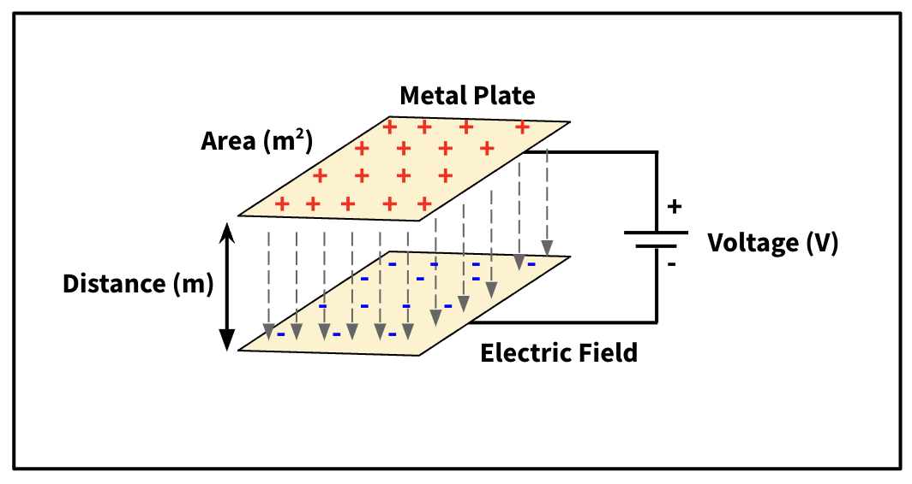
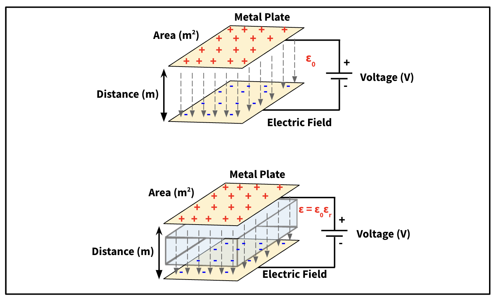
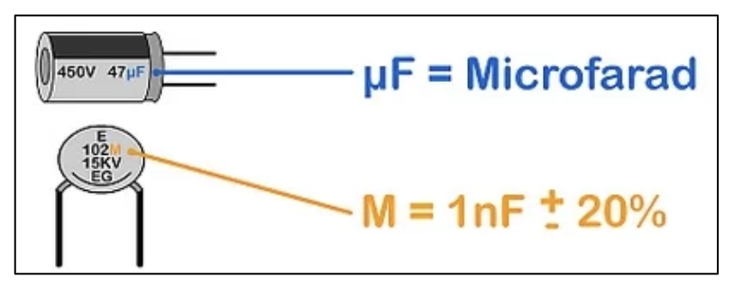
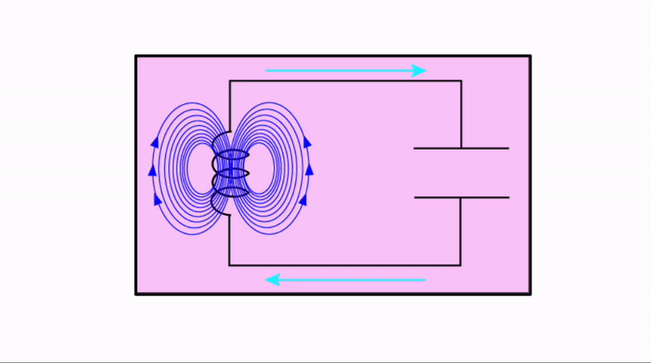
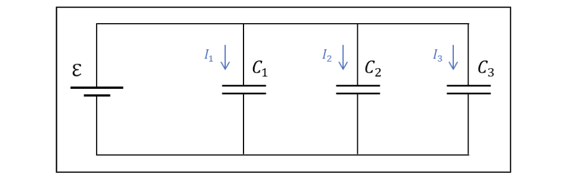
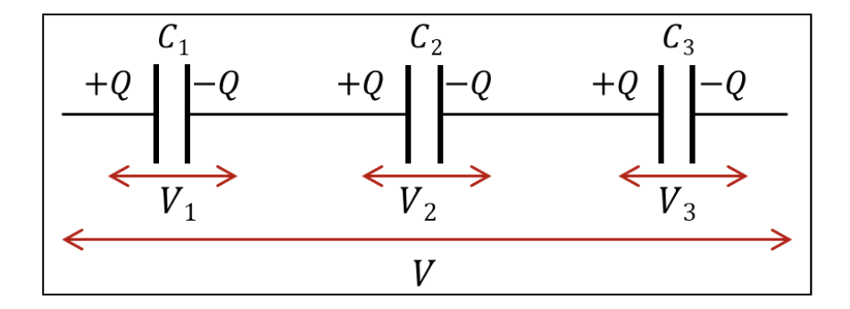
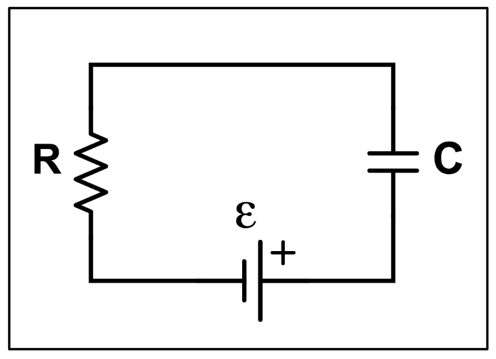
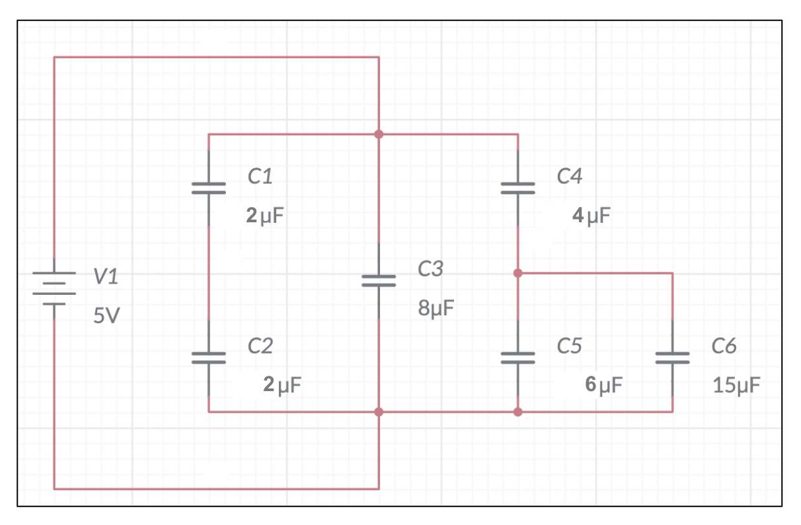

Lecture 9: Capacitors#
Learning Objectives#
By the end of this lecture you should:
Know what a capacitor is.
Be able to define capacitance and farads.
Be able to use the equations for capacitance in circuit problems.
Be able to know and use the equations for capacitors in series and in parallel.

Capacitance and Capacitors#
A capacitor is a component that is used to store electrical charge. The amount of charge that a capacitor can hold is dependant on both its capacitance and the voltage that is supplied to it. Capacitance is measure of a components ability to collect and store energy in the from of electrical charge, and is defined as the charge stored per unit volt, which can be written mathematically as:
\( C = \frac{Q}{V}, \)
Where \(C\) is the capactance, \(Q\) is the charge and \(V\) is the voltage supplied. The unit for capacitance is the Farad, F, where \(1\,F\) is simply equal to \(1\, C\,V^{-1}\). In reality \(1\,F\) is very large and typical capacitors have capacitances in the pico, micro or milli Farad range.
Now that we have an understanding of what capacitance is, it is worth investigating how capacitors are constructed and how they operate.
Capacitor Construction#
A capacitor simply comprises two conducting metal plates that are seperated by a dielectric material (dielectric simply means electrically insulating). These plates are then connected to the terminals of a power supply either directly or indirectly.

In order to find out how much charge can be stored on the capacitor plates, we simply rearrange the equation above:
\( Q = CV. \)
There are three factors that contribute to the capacitance of a capacitor, these are:
The area of the capacitor plates.
The seperation distance between the capacitor plates.
The permittivity of the dielectric between the plates.
For a capacitor with no dielectric between the capacitor plates, the capacitance can be calculated as:
\( C = \epsilon_0 \frac{A}{d}, \)
where \( \epsilon_0\) is the permitivity of free space, \(A\) is the area of the plates and \(d\) is the distance seperating them. The capacitance of a capacitor with a dielectric between them can be calculated as:
\( C = \epsilon \frac{A}{d} = \left(\epsilon_r \epsilon_0 \right) \frac{A}{d}, \)
where \(\epsilon\) is the permittivity of the material, which is calculated by multiplying \(\epsilon_0\) by the relative permittivity, \(\epsilon_r\), of the material:
\(\epsilon = \epsilon_r \cdot \epsilon_0.\)
The relative permitivity is simply a unitless number.

Important
Capacitance is the ability of a capacitor to store charge. Capacitance is measured in Farads, F, and can be calculated using either of the equations below (situation dependent):
\( C = QV\)
\( C = \epsilon \frac{A}{d} = \left(\epsilon_r \epsilon_0 \right) \frac{A}{d}. \)
For a capacitor containing no dielectric, the capacitance is calculated as:
\( C = \epsilon_0 \frac{A}{d}. \)
Capacitor Operation#
In operation, when a capacitor in a circuit has a voltage applied across it (e.g. it is connected to a battery), charge flows from one plate and to the other, creating an electric field between the plates. This is known as charging a capacitor.
When the current in a capacitor reaches the metal plates as it charges, they become ‘stuck’ as they are attracted to the opposite charges, but the dielectric prevents them from crossing to the other plate. When an alternative path in the circuit is created, the capacitor will discharge. Charging is shown in the gif below:

How to read a capacitor#
Some capacitors will have the value of their capacitance printed onto them. On circular capacitors the first two numbers represent the value in pF (\(\times 10^{-12}\,F\)), whilst the third number represents how orders of magnitude larger the value actually is.

Practical Applications#
Energy Storage - as capacitors store energy in the form of charge, they are primarily used as a “temporary battery”.
Tuning - variable capacitors are used in tuning circuits in radio systems. In a radio a capacitor is coupled with an inductor. This inductor-capacitor-oscillator charges and discharges the capacitor in regular intervals. If the frequency of the intervals matches the frequency of a nearby broadcast, the radio will pick it up.
Sensors - capacitors are sensitive to changes in external factors such as humidity and mechanical strain, this means that they can be used to sense these changes by monitoring the loss or gain of capacitance. These changes change either the distance between the capacitor plates or the properties of the dielectric between them.
Important
Inductors (L) store energy in magnetic fields. We will learn more about inductors later in this course, but for now, just remember that they can be combined with a capacitor to form a system that oscillates between storing energy in a magnetic field and as charge. The frequency of this oscillation is dependant on the capacitance of the capacitor and the inducatance of the inductor. LC resonance is shown in the gif below:

Capacitors Combinations#
As is the case when a circuit contains mutliple resistors, we must take considerations of how to determine equivalent capacitance when we have multiple capacitors in a circuit. How we combine them depends on whether or not the capacitors are arranged in series or in parallel.
With multiple capacitors, we must use the equivalent capacitance to find the amount of charge flowing through a circuit - if we know the change in time we can also determine the current! Let’s consider the circuits in terms of charge rather than current.
Capacitors in Parallel:#

When arranged in parallel the current, and therefore charge, is split via the circuit junctions, but the potential difference across each of the capacitors will remain the same, thus:
\(Q_{tot} = Q_1 + Q_2 + Q_3,\)
and
\(V_{tot} = V_1 = V_2 = V_3,\)
Using the relationship \(Q=CV\):
\(C_{tot}V = C_1V + C_2V + C_3V,\)
\( \therefore C_{tot} = C_1 + C_2 + C_3. \)
Important
The general expression for determining the equivilent capacitance of \(n\) capacitors arranged in parallel is:
\( C_{tot} = C_1 + C_2 + ... + C_n \)
Capacitors in Series#

When arrange in series the current, and therefore charge, is the same for each of the capacitors, however there will be a different voltage drop across each capacitor. Thus:
\( Q_{tot} = Q_1 = Q_2 = Q_3, \)
and
\(V_{tot} = V_1 + V_2 + V_3, \)
Using the relationship \(V = \frac{Q}{C}\):
\(\frac{Q}{C_{tot}} = \frac{Q}{C_1} + \frac{Q}{C_2} + \frac{Q}{C_3}, \)
\(\therefore \frac{1}{C_{tot}} = \frac{1}{C_1} + \frac{1}{C_2} + \frac{1}{C_3}.\)
Important
The general expression for determining the equivilent capacitance of \(n\) capacitors arranged in series is:
\( C_{tot} = \frac{1}{C_{tot}} = \frac{1}{C_1} + \frac{1}{C_2} + ... + \frac{1}{C_n}.\)
As is the case for resistors, a circuit may contain capacitors arranged in both series and parallel and you may be required to use a combination of the rules above to determine the total equivalent capacitance.
You should note that the rules for combining capacitors and resistors in series and in parallel are the opposite of one another! If you can remember the rules for resistors, you can remember the rules for capacitors.
RC Circuits#
LC circuits are mentioned above, but it is also worth briefly considering RC circuits. These are circuits made up of a resistor and a capacitor as shown below.

Recall that the sum of the voltage drops across components in a circuit must equal the EMF supplied:
\(\epsilon = V_R + V_C, \)
\(\epsilon = IR + \frac{Q}{C}, \)
meaning that as charge accumulates on the plates of the capacitor, the current flowing through the circuit must decrease to compenstate as \(R\) and \(C\) are fixed. This means that the voltage measured across the resistor varies as a function of time as the capacitor charges or discharges.
Questions#
Warning
Atempt the questions before looking at the solutions otherwise you will not learn!
Students who look at mark schemes without going through the motions of a question often think “yes, that’s what I would have done”, but are then unable to perfom on exams as the knowledge was never consolidated through practise.
Note
Units have been omitted in calculations below for simplicity. Ensure you know what each value represents.
Question 1#
A capacitor is formed of a two square conducting plates with length \(0.0200\,m\). The plates are seperated by a distance of \(0.00500\, m\) by a dielectric with a relative permitivity of \(5.60\). Calculate the capacitance of the capacitor.
Q1 Solution
To solve this question we simply need to use the formula to determine the capacitance:
\( C = \epsilon_r \epsilon_0 \frac{A}{d} \)
As the capacitor plates are square, the area is simply the side length squared, thus:
\( C = 5.6 \times 8.854\times 10^{-12} \frac{0.02 \times 0.02}{0.005}, \)
\( C = 3.97 \times 10^{-10} \, F,\)
\( C = 39.7 \,nF.\)
Question 2#
The circuit shown below is supplied by a 5 V source. What is the total amount of charge in the circuit?

Q2 Hint
To answer this question you will need to break this circuit into smaller sections, calculate their equivalent capacitance, and the combine these sections to find the total equivalent capacitance.
Q2 Solution
First, capacitors \(C_5\) and \(C_6\) are arranged in parallel, so their equivalent capacitance can be determined:
\( C_{5,6} = C_5 + C_6 ,\)
\( C_{5,6} = 6 + 15, \)
\( C_{5,6} = 21 \, \mu F. \)
This equivalent capacitor is arranged in series with \(C_4\) meaning that the equivalent capacitance of this section of the circuit can be calculated as:
\( \frac{1}{C_{4,5,6}} = \frac{1}{C_4} + \frac{1}{C_{5,6}}, \)
\( \frac{1}{C_{4,5,6}} = \frac{1}{4} + \frac{1}{21}, \)
\( \frac{1}{C_{4,5,6}} = \frac{25}{84}, \)
\( C_{4,5,6} = \frac{84}{25} \, \mu F. \)
Next, the equivlent capacitance of \(C_1\) and \(C_2\) can be determined in the same way:
\( \frac{1}{C_{1,2}} = \frac{1}{C_1} + \frac{1}{C_2}, \)
\( \frac{1}{C_{1,2}} = \frac{1}{2} + \frac{1}{2}, \)
\( \frac{1}{C_{1,2}} = \frac{2}{2}, \)
\( C_{1,2} = 1 \, \mu F. \)
Finally, the total equivalent capacitance of the circuit can be calculated as the two equivalent capacitors \(C_{1,2}\) and \(C_{4,5,6}\) are arranged in parallel with \(C_3\):
\( C_{total} = C_{1,2} + C_3 + C_{4,5,6} ,\)
\( C_{total} = 1 + 8 + \frac{84}{25}, \)
\( C_{total} = \frac{309}{25} \, \mu F. \)
Finally, the total charge amount of charge in the circuit can be calculated as:
\( Q = CV, \)
\( Q = \frac{309}{25} \times 10^{-6} \times 5 \)
\( Q = 6.2 \times 10^{-5} \, C, \)
\( Q = 62 \, \mu C. \)
The factor of \(10^{-6}\) above comes from the fact that I have converted the from micro-Farad to Farad. I simply kept my value in fraction from during my calculation to prevent rounding errors being carried forward to my final answer.